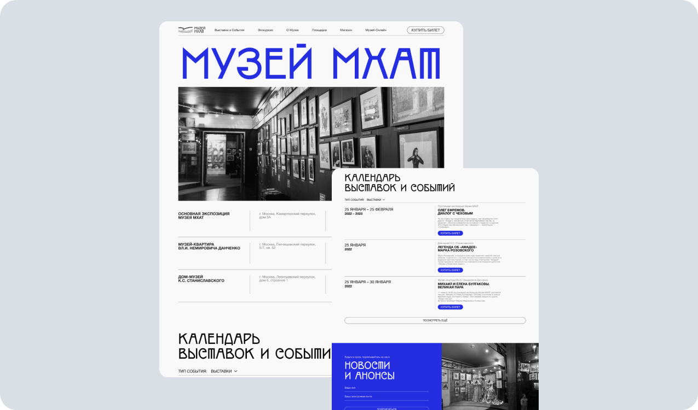

Корпоративный сайт музея
Ситуация
Руководство Музея МХАТ развивало цифровую среду и планировало обновить корпоративный сайт. Анализ обращений показал, что посетителям сложно оплачивать билеты онлайн, находить подробную информацию о выставках, экскурсиях и других событиях. На сайте не хватало календаря и фильтрации по типам мероприятий, поэтому часть вопросов переходила администраторам и в колл-центр.
Задача
Мне предстояло спроектировать удобный сайт, который упростит поиск мероприятий и покупку билетов, повысит эффективность цифровых каналов музея и снизит нагрузку на сотрудников, консультирующих посетителей.
Процесс
Совместно с руководителем команды развития я изучил запросы, жалобы и предложения посетителей: результаты опросов, записи из книги жалоб и обратную связь от сотрудников, которые напрямую работали с аудиторией. На основе исследования мы сформулировали основные проблемы и требования к календарю, фильтрации мероприятий и онлайн-кассе.

После согласования плана и сроков я провёл конкурентный анализ, собрал референсы и разработал прототип. Затем подготовил финальные макеты и UI-кит, передал их разработчикам, контролировал качество реализации на промежуточных этапах и провёл итоговое дизайн-ревью.
Из-за сжатых сроков я предложил разделить запуск на два этапа. Сначала мы выпустили основной сайт со стандартной онлайн-кассой, чтобы не задерживать продажи и быстрее разгрузить колл-центр. Затем я адаптировал дизайн кассы под технические ограничения её движка и передал обновлённые макеты подрядчику.
Результат работ
Сайт был запущен без задержки продаж билетов. После запуска выросло количество уникальных посетителей сайта и снизилась нагрузка на администраторов и колл-центр. Точные значения метрик не сохранились, поэтому количественные показатели в кейсе не приводятся.